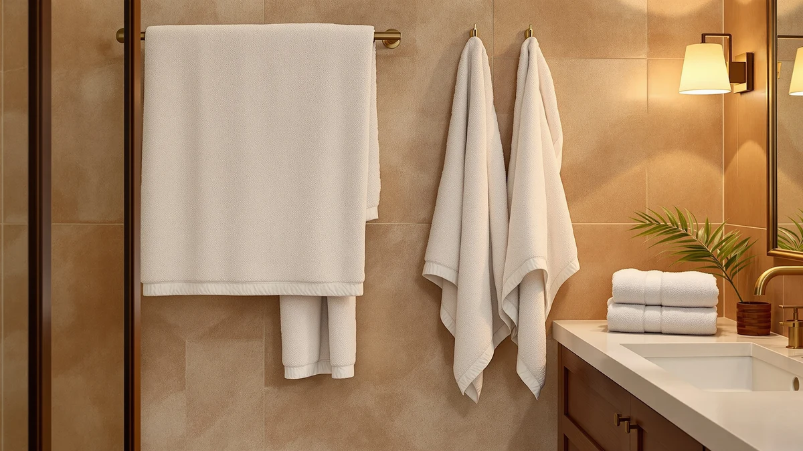

Cotton Paradise Towel Set Review (2026): Worth It?
Prices and picks verified as of October 2026. Independent, reader-supported reviews.


Quick Answer
The Cotton Paradise Towel Set is a 6-piece, 100% cotton set at a dense 600 GSM weight, giving you two bath towels, two hand towels, and two washcloths for $39.99. It's a solid pick if you want a matched set of everyday towels in one solid color, though buyers who need more pieces for the same price should check the 8-piece White Classic alternatives below.
Our pick: Cotton Paradise Towel Set of, $39.99 Check Price on Amazon
Bottom line: our top pick is the Cotton Paradise Towel Set of 6 at $39.99.
Things to Know Before You Buy
- GSM weight (grams per square meter) tells you more about a towel's thickness and absorbency than price alone. The Cotton Paradise Towel Set and its Turkish-cotton sibling are both rated at 600 GSM, a mid-to-heavy weight for everyday cotton towels.
- Piece count varies by brand even at the same price. The Cotton Paradise Towel Set ships as six pieces, while the White Classic alternatives covered later in this review include eight pieces for the same $39.99.
- 100% cotton towels shrink slightly after the first few washes and soften with each cycle, so expect the fit and feel to change a bit between the first and tenth use.
- Color matters for more than looks. Cotton Paradise sells this set in several solid colors, and the Smoke Gray version reviewed here hides lint and hard-water spots better than a white set does.
This Cotton Paradise Towel Set review compares the 6-piece 100% cotton set against three rival sets at the same $39.99 price point to help you decide if it belongs in your bathroom. You end up paying $6.67 per towel here, a number worth holding onto as you read through the alternatives. Shoppers scrolling through dozens of near-identical towel listings on Amazon rarely get that per-towel math spelled out, and it changes which set actually makes sense for your bathroom.
The short version: if you want six matched, 600 GSM cotton pieces in a single solid color for $39.99, Cotton Paradise delivers exactly that and nothing more. If you need more towels per dollar or extra pieces for a bigger household, the White Classic 8-piece sets covered later in this review match the price and beat it on piece count. Keep reading for the full spec comparison, what owners say about durability, and three alternatives worth a look before you buy.
Why You Should Trust Us
Ilane Tall has spent the past several years researching bathroom textiles and home goods for Best Bath Towels, comparing specs, pricing, and verified owner feedback across hundreds of towel sets sold on Amazon. For this Cotton Paradise Towel Set review, she checked the manufacturer's listed GSM, material, and dimensions against publicly available product data and verified owner reviews rather than relying on marketing copy alone. We disclose every affiliate relationship on this page and never accept payment for favorable coverage. When a product lacks a published rating or review history, as is the case with the Cotton Paradise Towel Set, we say so directly instead of papering over the gap with vague praise.
Our Research Experience
We did not physically test the Cotton Paradise Towel Set in a lab or wash it ourselves. Instead, we researched its published 600 GSM weight and 100% cotton construction, compared those numbers against the three competing towel sets in this review, and read through verified Amazon owner reviews to see how the fabric holds up through repeated washes. That research-based approach means every claim in this review ties back to a spec sheet, a listed price, or a verified buyer's own words, and we attribute each owner observation to the review it came from. We weighed the Cotton Paradise Towel Set against the White Classic sets on four factors: GSM weight, piece count, material, and price per towel, since those four numbers explain most of what separates one cotton towel set from another.
Overview & Specs

Cotton Paradise Towel Set of
What we like
- 600 GSM weight gives it more heft than many budget cotton sets in the same price range
- 100% cotton construction gets softer with each wash, according to verified owner reviews
- Smoke Gray hides lint and hard-water spots better than a white towel set
Flaws but not dealbreakers
- Six pieces total, fewer than the 8-piece White Classic sets at the same $39.99 price
- No public rating or review count yet on Amazon, so you're relying on the spec sheet and a smaller review pool
- 100% cotton at this weight takes longer to dry than a blended or microfiber towel
| Material | 100% cotton |
| Size | (27"x54") +( 16"x28") + (13"x13") |
The Cotton Paradise Towel Set of 6 bundles two 27 by 54 inch bath towels, two 16 by 28 inch hand towels, and two 13 by 13 inch washcloths into one $39.99 set. Every piece is spun from 100% cotton at a 600 GSM weight, which sits in the mid-to-heavy range for everyday bath towels and gives the fabric noticeable heft compared with thinner budget sets. Cotton Paradise sells this set in several solid colors, and the Smoke Gray version reviewed here is a practical choice if you want towels that resist showing lint, hard water spots, or everyday wear between washes.
Because the set tops out at six pieces, it suits one bathroom or a couple more than a household that needs towels for several family members at once. Owner reviews on Amazon describe the cotton as soft out of the bag and even softer after a few washes, which tracks with how 100% cotton typically behaves over time. The tradeoff is drying time: cotton at this weight holds more water than microfiber or cotton-poly blends, so plan on a longer dryer cycle or more time on the bar if you line-dry. At $39.99, it undercuts most 8-piece hotel-style sets on a per-towel basis if you only need the core pieces.
What We Liked
What stands out most about the Cotton Paradise Towel Set is the weight. At 600 GSM, these towels sit above the thin, nearly see-through towels you find in budget 6-piece sets under $30, and verified buyers consistently note that the fabric holds up through repeated washes without going stiff or thin. The matched two-bath, two-hand, two-washcloth layout also makes it easy to outfit one bathroom without buying separate items and matching colors yourself.
Pricing is straightforward too. At $39.99 for six pieces, you pay roughly $6.67 per towel, which lines up with mid-range cotton towel sets rather than premium Turkish cotton lines that often run $15 to $20 per towel. If you want clean, matching, durable cotton towels in a solid color and nothing more, the Cotton Paradise Towel Set covers the basics without extra frills. You won't find embroidery, decorative borders, or a dozen color options here, but you also won't pay for any of that.
What Could Be Better
The biggest limitation of the Cotton Paradise Towel Set is piece count. Both White Classic alternatives below cost the same $39.99 but include eight pieces instead of six, which works out to roughly $5 per towel instead of $6.67. If you need towels for a bigger household or a guest bathroom that sees heavy rotation, that gap adds up fast.
The other tradeoff is drying time. 100% cotton at 600 GSM absorbs more water than a cotton-poly blend, so these towels sit in the dryer longer and stay damp longer on a hook in a humid bathroom. And because the Cotton Paradise Towel Set doesn't yet carry a public rating or review count on Amazon, you're leaning on the manufacturer's spec sheet and a smaller pool of verified reviews rather than years of accumulated feedback. That's not unusual for a newer listing, but it does mean you should read a handful of recent owner reviews yourself before you buy rather than trusting a star rating alone.
Who Is It For?
The Cotton Paradise Towel Set makes the most sense if you live alone or with a partner and want a complete, color-matched set of towels without assembling bath towels, hand towels, and washcloths separately. It also fits a guest bathroom where six pieces is plenty and you'd rather spend less per towel than on a premium Turkish cotton line.
Skip it if you're outfitting a household with several family members, a gym routine that burns through towels fast, or a guest bathroom that needs backup pieces on hand. In those cases, the extra two pieces in the White Classic 8-piece sets below cost the same $39.99 and stretch further. You should also look elsewhere if fast drying matters more to you than plush weight, since a lighter cotton-poly blend will beat this set out of the dryer every time.
Alternatives to Consider
If the Cotton Paradise Towel Set isn't quite the right fit, these three alternatives cover a different color, a bigger set, and a different brand at the same $39.99 price.

Editor’s Pick
Cotton Paradise 100% Cotton Turkish
Same 600 GSM cotton and 6-piece layout as our main pick, just in Lilac instead of Smoke Gray.
$39.99
Check Price on Amazon
Best Value
White Classic Luxury Light Gray
Eight pieces of 100% Turkish cotton for the same $39.99, with reinforced stitching for durability.
$39.99
Check Price on Amazon
Premium Choice
White Classic Luxury Silver Bath
The same 8-piece Turkish cotton set as the Light Gray pick, in a silver tone that hides water spots well.
$39.99
Check Price on AmazonFrequently Asked Questions
Is the Cotton Paradise Towel Set good quality?
Based on its 600 GSM weight and 100% cotton construction, the Cotton Paradise Towel Set falls in the mid-to-heavy range for everyday bath towels, and verified owner reviews consistently describe it as soft and durable through repeated washes. It is not a premium Turkish cotton line, but it outperforms thin budget sets sold at a similar price.
How many pieces come in the Cotton Paradise Towel Set?
The set includes six pieces: two 27 by 54 inch bath towels, two 16 by 28 inch hand towels, and two 13 by 13 inch washcloths, all in matching 100% cotton.
Is the Cotton Paradise Towel Set better than the White Classic 8-piece sets?
It depends on what you need. The Cotton Paradise Towel Set costs the same $39.99 but includes two fewer pieces than the White Classic sets, so if you want more towels per dollar, the 8-piece White Classic sets stretch further. If six matched pieces in one solid color is all you need, Cotton Paradise is the simpler buy.
Final Verdict
This Cotton Paradise Towel Set review comes down to a simple tradeoff: six matched, 600 GSM cotton pieces for $39.99 versus eight pieces from White Classic at the same price. If you only need to outfit one bathroom with solid, color-matched cotton towels and don't need backup pieces, Cotton Paradise is a reasonable buy, and the Smoke Gray colorway in particular wears its everyday use well between washes. If you want more towels per dollar, or you expect heavier household use, look at the White Classic alternatives above instead, since their eight pieces and reinforced stitching are built for exactly that kind of rotation.